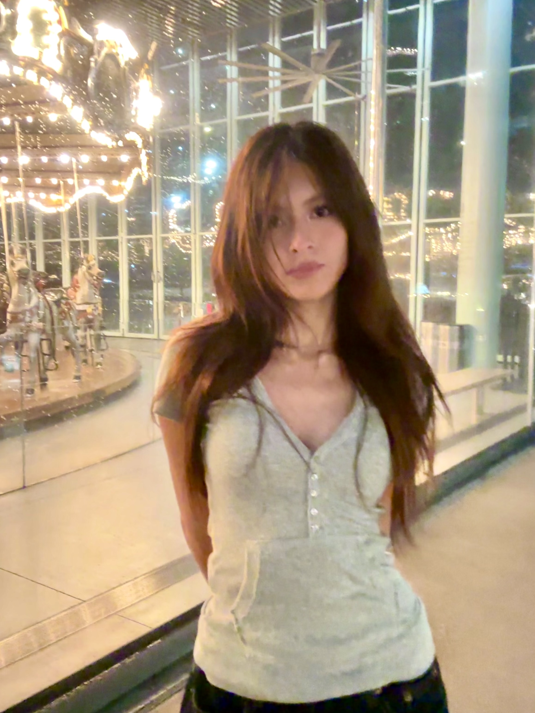

Welcome to my creative portfolio!
Photography · Fashion · Digital Design

Creative Statement
My name is Kiara Garcia, and I am a student who enjoys
being creative and expressing myself through different
types of art. I am interested in photography, fashion,
and digital design because they allow me to show my
personality and ideas in different ways. I like taking
pictures of places, people, and moments that catch my
attention. I also enjoy seeing how colors, lighting,
and editing can change the way a picture looks and
feels. Through this class, I have been learning how
to use Photoshop and Illustrator to create and edit
images. I am still learning how to use these programs,
but I enjoy trying new things and seeing how my work
improves. I want to create designs that are visually
interesting and have meaning behind them.
A lot of my inspiration comes from my everyday life,
social media, fashion, and the people around me. I
like looking at different styles of photography and
seeing how people use images to tell stories or express
emotions. In my creative work, I want to explore themes
like identity, beauty, emotions, and self-expression.
I am also interested in combining photography with
digital illustrations to create something different.
I want my work to reflect my personality and the way
I see the world. As I continue learning, I hope to
develop my own creative style and become more confident
in sharing my ideas through art and design.
My homework ✧
Explore my class assignments, reading reflections, and animations.
See Homework 1–9 →